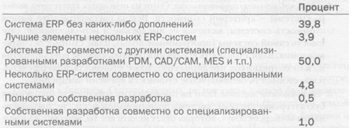

Быть или не быть (покупать или не покупать)?
Первое существенное решение, которое необходимо сделать группе выбора, — выбрать стратегию автоматизации: разрабатывать ли собственную ERP-систему или покупать готовое решение. Рассмотрим основные плюсы и минусы того и другого вариантов.
Это займет слишком много времени. Разработка полноценной ERP-системы — проект, рассчитанный на многие годы. Предприятие, решив внедрить ERP-систему, безусловно, рассчитывает окупить вложенные средства. В этом случае каждый месяц неиспользования системы ведет к потере дополнительной прибыли, которая могла бы быть получена с использованием уже готовой системы. Рассчитайте, сколько стоит один месяц неиспользования системы, и оцените стоимость разработки с этой точки зрения.
Будет ли она работать? В данном вопросе преимущество готового решения в том, что его работоспособность можно проверить до вложения средств в покупку. В случае самостоятельной работы над системой это невозможно: после года, двух или трех лет разработок может оказаться, что она не работает. Конечно, неработоспособность системы может быть обусловлена неправильным ее использованием сотрудниками предприятия. Но в девяти случаях из десяти проблемы при эксплуатации системы будут «свалены» на программу.
Она может быть чрезвычайно специфичной для сегодняшних условий ведения бизнеса. Система, разработанная самостоятельно, может быть слишком привязана к сегодняшним условиям ведения бизнеса предприятием. В случае изменения методов управления система может не поддержать такого перехода, и тогда ее придется писать (переписывать, дописывать) заново. Один из примеров, с которыми довелось столкнуться авторам, — изменение метода управления производством. Предприятие, на котором внедрялась стандартная ERP-система, осуществляло планирование и управление производством по типу производства на склад. Поэтому существовавшая в системе функциональность, позволяющая управлять производством позаказно, не была востребована предприятием. Однако после внедрения системы предприятие начало выпускать некоторые группы продукции под заказы клиентов. Не использовавшаяся ранее функциональность, изначально заложенная в системе, была задействована без дополнительных затрат.
Тем не менее наличие дополнительной функциональности не всегда хорошо, поскольку это усложняет систему. Но об этом — чуть позже.
Она может быть неполной. Неполнота системы может быть выражена в отсутствии необходимой функциональности или в том, что существующая функциональность не подходит существующим методам ведения бизнеса. Даже если бы существовали системы, подходящие на 100%, рано или поздно потребовалось бы внести в них какие-либо модификации, и это — неизбежность.
Она может быть очень сложной. Всегда ли это хорошо? Для отдела информационных технологий сложность системы — это длительные и сложные процедуры инсталляции и администрирования. Для пользователей — это большое количество функций, утилит и опций, которые повышают риск неправильного выбора при определении бизнес-процессов, реализуемых в системе. К таким функциям можно отнести автоматическое создание заданий в производство или заказов поставщику, автоматическое перепланирование производственных заданий, динамический расчет партии заказа и т.п.
Вовсе не обязательно, что значительное количество дополнительных функций и опций делают систему лучше для конкретного предприятия. Включение в систему дополнительных функций и опций значительно увеличивает стоимость как самого программного продукта, так и поддерживающего его аппаратного обеспечения. В этом случае также возрастает стоимость обучения, внедрения и сопровождения. Стоимость ненужных функций (модулей) может легко превзойти ожидаемых эффект от их использования.
С другой стороны, необходимо иметь в виду возможность расширения бизнес-операций компании в будущем. Было бы ошибкой покупать системы с явно избыточной функциональностью для небольшого предприятия, но вряд ли оправданна и покупка системы, поддерживающей только сегодняшнее состояние предприятия и не рассчитанной на дальнейший рост или изменения.
Могут быть трудности в совместном использовании с другими системами. Структура системы (бизнес-логика, СУБД и язык программирования, с использованием которых разработана система) может не позволить интерфейсировать ее с другими системам, уже использующимися или предполагаемыми к использованию на предприятии.
Могут существовать ошибки («баги»). «...Чрезвычайно высока вероятность того, что завтра утром солнце встанет на востоке. Вы просто можете быть уверены в этом. Примерно такова же вероятность того, что практически в любой ERP-системе будут баги». К сожалению, это действительно так, и для предприятия, использующего ERP-систему для решения своих проблем, основная трудность состоит в том, что ошибки эти могут быть исправлены только поставщиком системы. Медленное исправление ошибок может привести к срыву сроков проекта внедрения или даже остановке предприятия. Чтобы избежать этого, тщательно выбирайте систему и обращайте внимание на процедуры исправления ошибок, предлагаемые поставщиками.
В заключение отметим, что, несмотря на все «минусы» готовых систем, мировая практика внедрения ERP-систем подтверждает нецелесообразность самостоятельной разработки. Например, только 1,5% компаний США, использующих ERP-систему, выбрали путь ее создания собственными силами.
 |